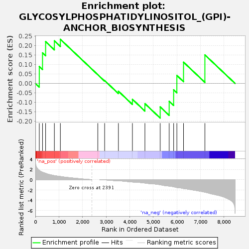
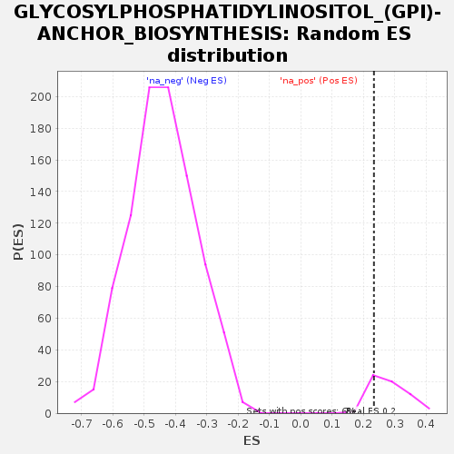

| | | Dataset | deres_notadjust |
| Phenotype | NoPhenotypeAvailable |
| Upregulated in class | na_pos |
| GeneSet | GLYCOSYLPHOSPHATIDYLINOSITOL_(GPI)-ANCHOR_BIOSYNTHESIS |
| Enrichment Score (ES) | 0.23376356 |
| Normalized Enrichment Score (NES) | 0.8320791 |
| Nominal p-value | 0.8 |
| FDR q-value | 0.79347265 |
| FWER p-Value | 0.963 |
Table: GSEA Results Summary

Fig 1: Enrichment plot: GLYCOSYLPHOSPHATIDYLINOSITOL_(GPI)-ANCHOR_BIOSYNTHESIS
Profile of the Running ES Score & Positions of GeneSet Members on the Rank Ordered List
| SYMBOL | RANK IN GENE LIST | RANK METRIC SCORE | RUNNING ES | CORE ENRICHMENT | | 1 | PIGN | 167 | 1.832 | 0.0897 | Yes |
| 2 | DPM2 | 304 | 1.479 | 0.1620 | Yes |
| 3 | PIGK | 435 | 1.254 | 0.2216 | Yes |
| 4 | PIGC | 806 | 0.806 | 0.2260 | Yes |
| 5 | PIGG | 1060 | 0.632 | 0.2338 | Yes |
| 6 | PIGQ | 2647 | 0.000 | 0.0460 | No |
| 7 | PIGM | 2937 | -0.051 | 0.0149 | No |
| 8 | PIGZ | 3520 | -0.213 | -0.0413 | No |
| 9 | PIGS | 4114 | -0.457 | -0.0841 | No |
| 10 | PIGL | 4644 | -0.661 | -0.1072 | No |
| 11 | PIGP | 5292 | -0.991 | -0.1245 | No |
| 12 | PIGF | 5673 | -1.253 | -0.0946 | No |
| 13 | PIGX | 5862 | -1.394 | -0.0336 | No |
| 14 | PIGT | 5999 | -1.538 | 0.0422 | No |
| 15 | GPAA1 | 6281 | -1.733 | 0.1126 | No |
| 16 | PGAP1 | 7186 | -2.437 | 0.1513 | No |
Table: GSEA details [plain text format]

Fig 2: GLYCOSYLPHOSPHATIDYLINOSITOL_(GPI)-ANCHOR_BIOSYNTHESIS: Random ES distribution
Gene set null distribution of ES for GLYCOSYLPHOSPHATIDYLINOSITOL_(GPI)-ANCHOR_BIOSYNTHESIS